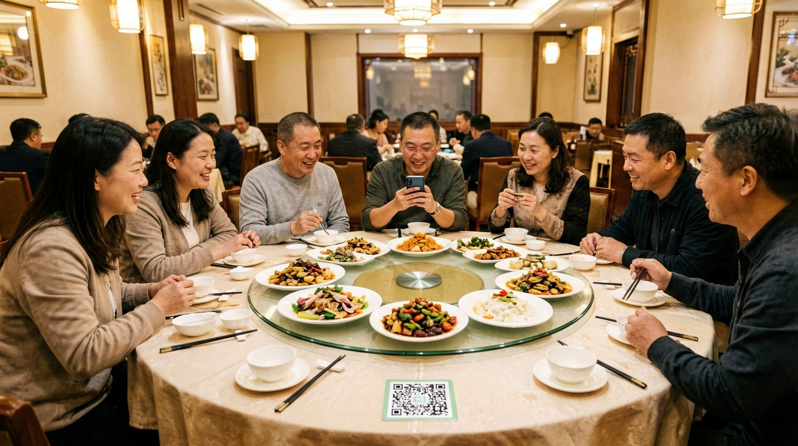
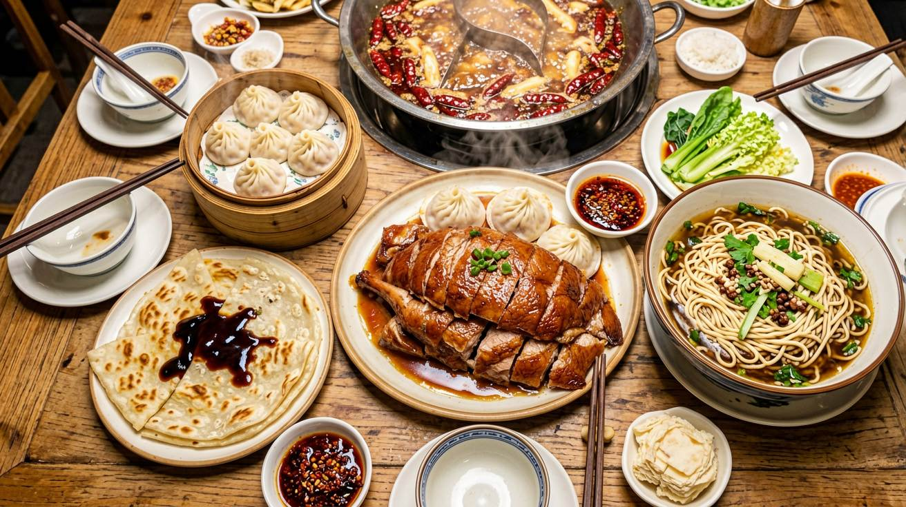
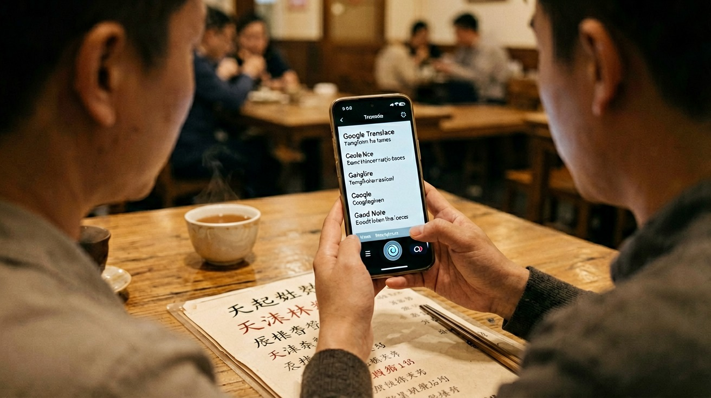
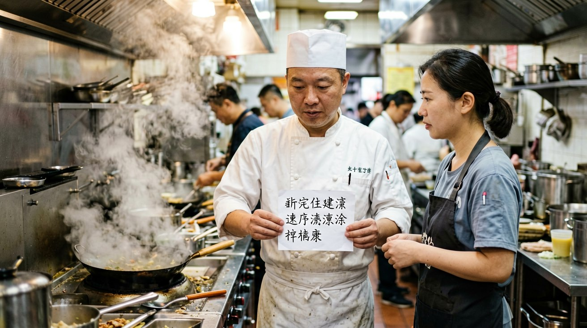
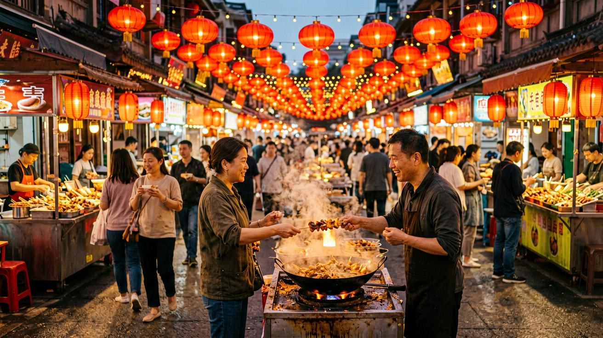

Last updated: June 2026.
Eating in China is one of the best parts of the trip, and it works differently from what you may be used to. Meals are shared, menus are often picture-based or entirely in Chinese, and you will order and pay by scanning a QR code with your phone. This guide walks you through how dining works, what to eat in each region, and how to handle dietary needs without speaking the language.

Walk into most restaurants in China and you seat yourself unless a host greets you at the door. Once seated, look for a QR code sticker on the table. Scan it with WeChat or Alipay, and a digital menu with photos of every dish opens on your phone. Tap what you want, confirm, and the order goes straight to the kitchen. No flagging down a server. No waiting for a menu.
Meals are designed for sharing. Dishes arrive at the center of the table as they are ready — not course by course — and everyone serves themselves from the shared plates. Rice is ordered separately; it does not come automatically with your meal. Portions are generous. Three dishes for two people is a typical starting point. Restaurants often have a lazy Susan (a rotating glass tray) in the center of the table for passing dishes around.
When you are done, pay by scanning the QR code on the receipt or at the counter. Most restaurants accept WeChat Pay and Alipay, both of which can be linked to international credit cards. Cash is still accepted in most places, but mobile payment is the norm even in small neighborhood spots. Tipping is not expected or customary in Chinese restaurants — there is no tip line on the bill, and leaving cash on the table will often be returned to you.
To find the best local restaurants, use Dianping (大众点评), a restaurant review app similar to Yelp. The interface is Chinese-only, but you can search by neighborhood and sort results by rating. A Dianping score of 4.5 or above reliably indicates a good meal. Save the restaurant name and address from the app and show it to a DiDi driver to get there.

Chinese cuisine varies dramatically by region, and eating your way across the country is half the experience. Here are the dishes worth planning meals around in the cities you are most likely to visit.
Beijing: Peking duck (北京烤鸭) is the obvious headliner — crispy skin, thin pancakes, sweet bean sauce, and slivers of cucumber and scallion. Book at Siji Minfu or Dadong rather than the tourist-trap duck shops. Zhajiangmian (炸酱面) — hand-pulled wheat noodles topped with a salty fermented soybean paste and shredded vegetables — is Beijing's best casual meal. For a local breakfast, try jianbing (煎饼), a savory crepe folded around egg, crispy crackers, and hoisin sauce, sold from street carts across the city.
Xi'an: This city sits at the crossroads of China's wheat belt and the Silk Road spice routes, and the food reflects it. Roujiamo (肉夹馍) is a seasoned chopped-meat flatbread sandwich that locals call the "Chinese hamburger" — find it at street stalls in the Muslim Quarter. Yangrou paomo (羊肉泡馍) is a hearty lamb soup where you tear flatbread into a bowl and the kitchen pours hot broth over it. Biangbiang noodles are wide, belt-like hand-pulled noodles served with chili oil and minced pork — order them at any noodle shop near the city wall.
Shanghai: Xiaolongbao (小笼包) — steamed soup dumplings filled with pork and a gelatinized broth that liquefies when steamed — are Shanghai's most famous dish. Jia Jia Tang Bao on Huanghe Road is a reliable spot. Shengjianbao (生煎包) are pan-fried buns with a crispy bottom and a juicy pork filling. For something sweeter, try hongshao rou (红烧肉), braised pork belly in soy sauce and rock sugar, served at most Shanghainese restaurants.
Chengdu and Chongqing (Sichuan): Sichuan food is defined by mala (麻辣) — the numbing-spicy combination of Sichuan peppercorns and dried chilies. Hot pot (火锅) is the centerpiece: a bubbling pot of chili oil and Sichuan peppercorns in the middle of the table where you cook thin-sliced meats, vegetables, and tofu. Mapo tofu (麻婆豆腐) — soft tofu in a fiery minced-pork and chili-bean sauce — is a classic. If the heat is too much, order dan dan noodles (担担面) with less chili oil and a spoonful of sesame paste to cut the spice.
Guangzhou: Cantonese dim sum (点心) is a morning ritual of bite-sized steamed and fried dishes served from rolling carts. Har gow (shrimp dumplings), siu mai (pork-and-shrimp dumplings), and char siu bao (barbecue pork buns) are the standards. Come between 9:00 AM and 11:00 AM for the best selection. White cut chicken (白切鸡) — poached chicken served cold with ginger-scallion oil — is another Cantonese essential.

In major cities, restaurants in tourist areas and shopping malls often have picture menus or English translations. In local neighborhood spots, expect Chinese-only menus. This is manageable with the right tools.
Google Translate in camera mode is the fastest method — open the app, point your camera at the menu, and the Chinese characters turn into English on your screen in real time. Pleco, a dedicated Chinese dictionary app, works offline and lets you draw characters you cannot scan. Apple's built-in translation app also handles Chinese photo translation.
QR code menus inside WeChat and Alipay are helpful because each dish listed usually has a photo. Even without reading the Chinese, you can scroll through the images and pick what looks appealing. And pointing at other diners' dishes is perfectly acceptable in local restaurants — indicate what you want to the server, and they will understand.
A few phrases go a long way. "Wǒ yào zhège" (我要这个 — "I want this one") while pointing at a menu photo or another table's dish works in any restaurant. "Máidān" (买单) or "Jiézhàng" (结账) means "the bill, please." "Duōshǎo qián?" (多少钱) means "how much?" Keep these on a note in your phone.

Communicating dietary needs in China requires preparation, but it is entirely doable. The most reliable method is to save a note on your phone — or print a card — with your dietary restrictions written in Chinese characters. Show it to your server before ordering. Here are the key phrases to prepare:
Carry antihistamines if you have food allergies. Awareness of severe allergies — especially nut and shellfish reactions — is lower than what you may be used to, so communicate your needs clearly and bring your own medication. When in doubt, eat at hotel restaurants where the kitchen staff is more likely to have experience with dietary requests.

Street food is generally safe and often the best food you will eat in China. Follow the crowd — stalls with long local queues are serving fresh food at high turnover. Look for vendors cooking to order rather than displaying pre-cooked items that have been sitting out. Night markets in Xi'an's Muslim Quarter, Beijing's Wangfujing snack street, and Shanghai's Yunnan Road are the best places to start.
Tap water is not safe to drink anywhere in China. Boiled water is standard and served at every restaurant — just ask for 热水 (rè shuǐ, hot water). Bottled water is cheap and available at every convenience store. Use bottled or boiled water for brushing your teeth if you have a sensitive stomach.
Breakfast in China is quick, savory, and widely available. Street vendors and small shops open by 6:30 AM selling steamed buns (包子, bāozi), soy milk (豆浆, dòujiāng) with deep-fried dough sticks (油条, yóutiáo), jianbing crepes, and rice porridge (粥, zhōu). Hotel breakfast buffets are safe but expensive and rarely worth it when there is better food on the street for a fraction of the price.
Food delivery is ubiquitous in China. Meituan (美团) and Ele.me (饿了么) are the dominant apps, and both now support English interfaces and international card payments. Open the app, browse by photo, and have food delivered to your hotel within 30 to 45 minutes. Delivery riders will call when they arrive, so a translation app or a Chinese-speaking hotel staff member can help bridge the handoff.
Solo dining is less common in China than in the West — most meals are group affairs. Smaller restaurants, noodle shops, and fast-casual chains are the best options when you are eating alone. Order a bowl of noodles (牛肉面, niúròu miàn — beef noodle soup) or a plate of dumplings (饺子, jiǎozi), which are served as individual meals rather than shared dishes.
This article is based on information as of June 2026.
Sources
Restaurant availability and app features may change. Verify specific dishes and restaurant hours before your trip.